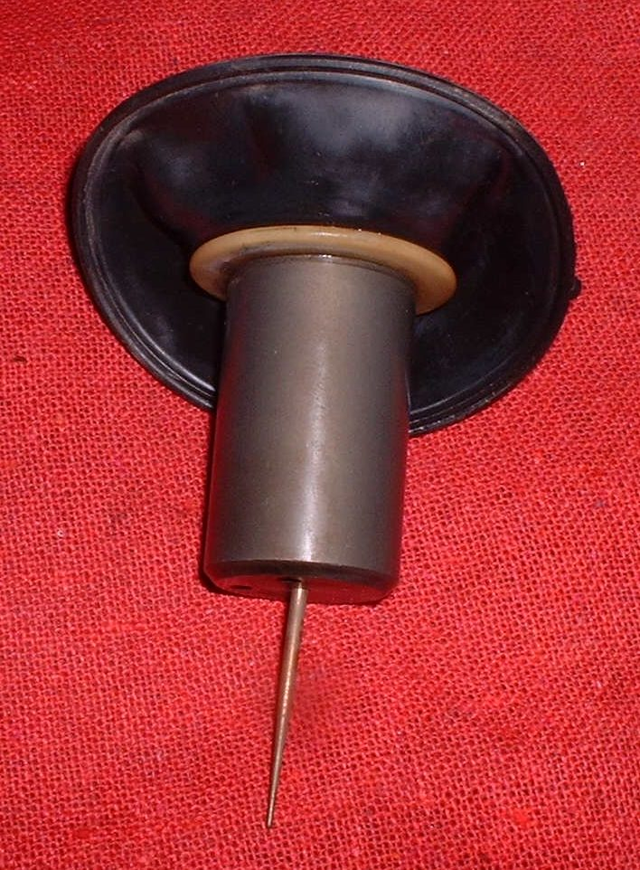

Several carburettors use rubber diaphragms. The most common is the slide diaphragm of a constant velocity carburettor, which is lifted by engine vacuum. Some carburettors have a second diaphragm on the side that closes the idle air passage when the throttle is shut, to make the mixture richer on deceleration and cut backfiring. Some have a diaphragm in the accelerator pump.
What it does
It turns vacuum or pressure into movement. A hole or crack leaks the vacuum, and the part it controls does not move correctly.
Signs it is worn or failing
- Engine with good compression that starts but revs up very slowly and has no power: Engine starts well but revs slowly.
- Hesitation when the throttle opens, or a pop when the throttle is closed.
- Pinholes or cracks seen when the part is held to the light.
When to replace it
Replace any diaphragm with a hole or crack. They are costly and not always sold alone, so it may need a complete slide or kit. Some people coat a leaking diaphragm with a flexible rubber coating, which may help for a time.
What to match when buying
- Carburettor make and model.
- Slide and diaphragm as a set, or the diaphragm for the accelerator pump or vacuum valve, whichever applies.
- Genuine maker parts if possible.
Fitting notes
- Do not spray cleaner on rubber. Wipe the slide with a damp rag.
- Seat the diaphragm lip in its groove before the cover is fitted.
- See Check the slide diaphragm of a constant velocity carburettor.